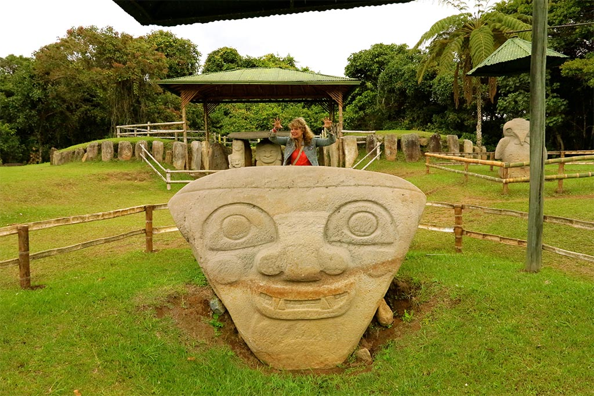

Sant Agustí és una població i municipi de Colòmbia al sud del departament del Huila. Situat a una alçada de 1.730 metres sobre el nivell del mar en els contraforts del Massís Colombià.
En aquest municipi es troba la llacuna del Magdalena que dóna naixement al riu del mateix nom, sent aquest el riu més important de Colòmbia. En territori del municipi de Sant Agustí es troba ubicat el parc arqueològic de Sant Agustí, que és un dels més importants espais arqueològics de Colòmbia i va ser declarat Patrimoni de la Humanitat per la Unesco el 1995.
Sant Agustin es caracteritza per ser una barreja cultural, els residents nacionals i estrangers són un exemple. El turisme augmenta cada dia i les àrees rurals amb usos del sòl diversificats ofereixen noves i més atractives formes de recórrer aquests llocs, l'ús de la bicicleta i la caminada o la cavalcada són llacunes alternatives a la regió.
